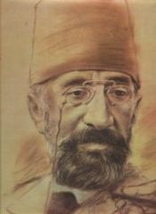

SALVADOR DALİ
YAŞAMI
Asıl adı Salvador Domingo Felipe Jacinto Dalí y Domènech olan Salvador Dali sürrealizmin en önde
gelen ressamlarındandır. İspanyol asıllıdır. Gerçeküstü eserlerindeki tuhaf ve çarpıcı imgelerle
ünlenmiştir. En iyi bilinen eseri olan Belleğin Azmini 1931'de bitirmiştir.
Katalonya doğumlu olan Dalí, 711 yılında İspanya'yı fethetmiş olan Mağribiler'in soyundan geldiğini
iddia etmiş, "süslü ve cafcaflı olan her şeye, lüks hayata ve doğu kıyafetlerine olan düşkünlüğünü"
de "Arap kökeni"ne bağlamıştır.
Salvador Dali sadece eserleriyle değil yaşam tarzı, kişiliği, düşünceleriyle ve farklı görünümüyle
de dikkat çekmeyi başarmış bir ressamdır. Onu herkesten ayıran ve tüm dünya tarafından karakterize
olmuş bıyığıyla ve sıra dışı tavrıyla dünya üzerinde bir ekol olmayı başarmış bir isimdir.
1914'te annesinin desteğiyle özel bir resim okuluna yazılan Dalí, 1919'da Figueres Belediye
Tiyatrosu'nda ilk sergisini açtı. Şubat 1921'de ise çok sevdiği annesini meme kanserinden kaybetti.
Kendine özgü yapısıyla, iddialı tavrıyla ve eserleriyle kendini tüm dünyaya kanıtlamış sanatçı
sadece sürrealizm çizgisinde değil Kübist ve Dadaist bir çizgiden geçerek eserlerini vermiştir.
Salvador Dali 11 Mayıs 1904 'te İspanya'da Figueres isimli kentte (Katalonya bölgesinde) dünyaya
geldi. Kendinden önce doğan ve ölen kardeşin ismini alan Dali, ailesinin evlatlarını kaybetmelerini
kabullenememesini ve sürekli olarak takıntılı biçimde anılmasını hayatında önemli bir nokta olarak
kaydediyor. Ailesinin tavrıyla birlikte doğar doğmaz tapınılan bir ölünün ayak izlerinden yürüdüğünü
söyleyerek bu konunun hayatındaki yansımasını bize göstermiştir Dali. Tam da bu sebeple ailesinin
dikkatini çekmek amacıyla farklı yollar aramış ve şımarık bir çocuk olan Dali'nin ilk yaptığı eserin
adı ''Hasta Çocuk'' olmuştur. Devamında bir çok çalışma sergi Picasso'yla tanışması annesini
kaybetmesi de eserlerine yansıyan hususlar olmaya devam etmiştir. Hemen herkesin bildiği Belleğin
Azmi eseri özellikle en ünlü eseri olmuştur. Dalí, ressamlığın yanı sıra heykelcilik, fotoğrafçılık
ve filmcilikle de ilgilenmiş, Amerikalı animasyoncu Walt Disney ile beraber yaptığı Destino adlı
kısa çizgi film, 2003'te "en iyi kısa animasyon filmi" dalında Oscar adayı olmuştur.
1931 yılında Dalí, en meşhur eseri olan Belleğin Azmini yaptı. Yumuşak Saatler ya da Eriyen Saatler
olarak da bilinen eserde, geniş bir kumsal manzarası önünde eriyen cep saatleri resmedilmiştir. Eser
genel olarak, katı ve değişmez zaman kavramına karşı bir protesto olarak yorumlanır. Dalí sonradan
bu resmin ilhamını, sıcak Ağustos güneşi altında erimekte olan bir Camembert peynirinden aldığını
yazacaktı.
Hiroşima'da patlayan atom bombasının gücünden çok etkilenmiş olan Dalí, hayatının bu dönemine
"nükleer mistisizm" adını veriyordu. Yine bu dönemde Dalí, tuvale boya sıçratma, hologramlar, optik
yanılgılar ve stereoskopi gibi pek çok değişik teknikle denemeler yaptı.
Salvador Dali'yi, elbette eşi Gala'yla yaşadığı ilişkiler, dünyada yaşanan politik değişimler de
oldukça etkilemişti. Dali'nin sansasyonel tavrı, söylediği sözler tabi ki sanatını etkiliyordu. her
ne kadar politik tavrı değişim göstermiş ve insanların ve sanatçıların tepkisini çekse de yaptığı
sergiler daha dikkatle izlenme olanağı bulmuştur. Onun farklı yapısı, dikkat çekici sözleri hatta
bazen kötü bir üne kavuşması bile onun dolaylı reklamını yapmış ve bir çok insana ulaşmasını
sağlamıştır. Gala'nın ölümünden sonra resim yapmayı nerdeyse bırakan Dali bir süre sonra son olan
Serçenin Kuyruğu adlı tablo eserini yaptı. Dalí, 23 Ocak 1989'da kalp yetmezliğinden öldü ve
Figueres'te Salvador Dali Müzesi mahzenine gömüldü.
Bugün Dalí'nin eserlerinin büyük çoğunluğu, Figueres'deki Dalí Tiyatro ve Müzesi'nde bulunur.
Florida'nın St. Petersburg kentindeki Salvador Dalí Müzesi, Madrid'deki Reina Sofia Müzesi ve Los
Angeles'taki Salvador Dalí Galerisi de sanatçının yüzlerce eserini barındırır.
Dalí'nin 1965'te New York'taki Rikers Island Hapishanesi'ne bağışladığı çarmıha gerilmiş İsa resmi,
1981'e kadar hapishanenin yemekhanesinde asılı durduktan sonra buradan alınarak hapishanenin
lobisine asılmış, 2003'te ise kimliği belirsiz kişilerce lobiden çalınmıştır.